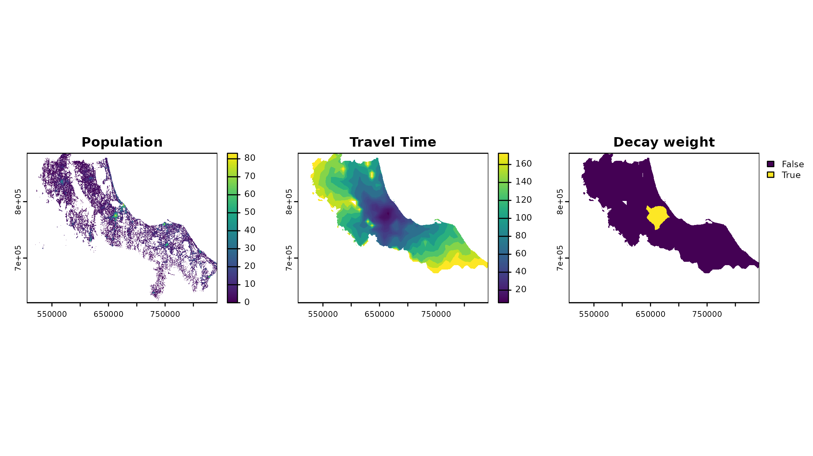

4. Tradeoffs: Understanding the Raster Approach in Spatial Accessibility Analysis
Source:vignettes/spax-104-raster-tradeoff.Rmd
spax-104-raster-tradeoff.Rmd
# Load required packages
library(spax)
library(terra)
library(pryr) # for memory tracking
library(tidyverse)
#> Error in get(paste0(generic, ".", class), envir = get_method_env()) :
#> object 'type_sum.accel' not found
library(sf)Why a Raster-Based Approach?
When working with spatial accessibility analysis, one of the first
decisions is how to represent spatial data. The spax
package takes a raster-based approach, representing space as a grid of
regular cells rather than points and polygons. This fundamental choice
shapes everything from memory usage to computational methods.
Understanding the Memory-Performance Trade-off
Let’s be upfront about the costs and benefits. Raster representations typically require more memory than their vector counterparts:
# Compare memory usage between vector and raster isochrones
vec_size <- object_size(hos_iscvec) / 1024^2
rast_size <- object_size(hos_iscr) / 1024^2
cat(
"Memory usage comparison:\n",
sprintf("Vector isochrones: %.1f MB\n", vec_size),
sprintf("Raster isochrones: %.1f MB\n", rast_size),
sprintf("Memory increase factor: %.1fx\n", rast_size / vec_size)
)
#> Memory usage comparison:
#> Vector isochrones: 5.9 MB
#> Raster isochrones: 194.0 MB
#> Memory increase factor: 32.7x*Note: The actual memory increase factor may vary depending on the resolution and complexity of the raster data.
So why accept this memory overhead? The benefits come in three key areas:
1. Computational Efficiency
Raster operations translate directly into matrix operations, which modern computers are highly optimized to handle. Instead of complex geometric calculations, we’re essentially doing math on a grid:
# Simple example:
# 1. Calculate areas within 30 minutes of a facility
# 2. Calculate Gaussian distance decay with an SD of 30 minutes
# 3. Calculate Exponential distance decay with a decay rate of 0.05
distance_raster <- rast(hos_iscr)[[1]] # Travel time to first facility
# Set grid
par(mfrow = c(2, 2))
# Distance raster
plot(distance_raster, main = "Travel Time to Hospital C1 (minutes)")
plot(vect(hc12_hos[1, ]), add = TRUE, col = "red", pch = 16)
plot(vect(bound0), add = TRUE)
# Area within 30 minutes
within_30min <- distance_raster <= 30 # Simple logical operation
plot(within_30min, main = "Area within 30 minutes")
plot(vect(hc12_hos[1, ]), add = TRUE, col = "red", pch = 16)
plot(vect(bound0), add = TRUE)
# Gaussian decay
gaussian_decay <- exp(-0.5 * (distance_raster / 30)^2) #
plot(gaussian_decay, main = "Gaussian Distance Decay")
plot(vect(hc12_hos[1, ]), add = TRUE, col = "red", pch = 16)
plot(vect(bound0), add = TRUE)
# Exponential decay
exponential_decay <- exp(-0.05 * distance_raster)
plot(exponential_decay, main = "Exponential Distance Decay")
plot(vect(hc12_hos[1, ]), add = TRUE, col = "red", pch = 16)
plot(vect(bound0), add = TRUE)Each operation above is a simple cell-by-cell calculation, leveraging optimized matrix operations rather than complex geometric computations. Essentially, as long as you can represent your problem in a vectorized format, it can be applied to a raster.
2. Data Structure Consistency
Almost everything in spatial accessibility analysis - population distribution, travel times, decayed weight, or accessibility scores - can be represented in the same format. This consistency eliminates the need for constant conversion between different spatial representations:
# Show how different components share the same structure
par(mfrow = c(1, 3))
# Population density
plot(rast(u5pd), main = "Population")
# Travel time
plot(distance_raster, main = "Travel Time")
# Result will have same structure
plot(within_30min, main = "Decay weight")
Having consistent data structures means:
Simpler code with fewer conversions
More predictable memory usage
Easier to chain operations together
3. Built-in Spatial Relationships
The grid structure automatically encodes spatial relationships. We don’t need separate distance matrices or spatial indices - the cell positions themselves tell us what’s near what. This implicit spatial indexing:
Simplifies neighbor-based calculations
Makes parallel processing more straightforward
When to Consider Alternatives
The raster approach isn’t always optimal. Consider vector-based methods when:
- Your study area is very sparse with few service locations
- You need exact precision at specific points
- Memory is severely constrained and you’re working with a large area
- The granularity of your analysis doesn’t require a continuous surface
Impact on Package Design
the raster-based approach influences how spax functions
are designed:
Modular Components: Each function performs a specific raster operation
Consistent Interfaces: Most functions expect and return raster objects
Performance Optimization: Special handling for large raster operations
Practical Memory Management
When working with raster-based analysis, memory management becomes crucial. Let’s explore some practical strategies:
1. Understanding Memory Requirements
First, let’s see how memory usage scales with resolution:
# Function to calculate memory requirements
calc_memory_req <- function(res_factor, template = u5pd, n_facilities = nrow(hc12_hos)) {
base_rast <- rast(template)
test_rast <- aggregate(base_rast, fact = res_factor)
cells <- ncell(test_rast)
bytes <- 8 * cells * n_facilities # 8 bytes per value
return(list(
resolution = res(test_rast),
cells = cells,
memory_mb = bytes / 1024^2
))
}
# Compare different resolutions
resolutions <- c(1, 2, 4, 8)
mem_reqs <- lapply(resolutions, calc_memory_req)
#> Warning: [aggregate] all values in argument 'fact' are 1, nothing to do
# Create summary table
mem_summary <- data.frame(
"Resolution_m" = sapply(mem_reqs, function(x) round(x$resolution[1])),
"GridCells" = sapply(mem_reqs, function(x) format(x$cells, big.mark = ",")),
"MemoryInMB" = sapply(mem_reqs, function(x) round(x$memory_mb, 1))
)
mem_summary
#> Resolution_m GridCells MemoryInMB
#> 1 520 329,323 193.5
#> 2 1041 82,620 48.5
#> 3 2082 20,736 12.2
#> 4 4163 5,184 3.02. Optimizing Resolution
The key is finding the right balance between detail and performance:
# Compare computation time at different resolutions
benchmark_res <- function(res_factor) {
# Aggregate test data
if(res_factor == 1) {
pop_agg <- rast(u5pd)
dist_agg <- rast(hos_iscr)
} else {
pop_agg <- aggregate(rast(u5pd), fact = res_factor)
dist_agg <- aggregate(rast(hos_iscr), fact = res_factor)
}
# Time the computation
start_time <- Sys.time()
test_result <- spax_e2sfca(
demand = pop_agg,
supply = hc12_hos$s_doc, # Use subset for example
distance = dist_agg,
decay_params = list(method = "gaussian", sigma = 30),
snap = TRUE # Fast mode for benchmarking
)
end_time <- Sys.time()
return(as.numeric(difftime(end_time, start_time, units = "secs")))
}
# Test different resolutions
res_times <- sapply(resolutions, benchmark_res)
time_summary <- data.frame(
"Resolution Factor" = resolutions,
"Runtime (seconds)" = round(res_times, 2)
)
print(time_summary)
#> Resolution.Factor Runtime..seconds.
#> 1 1 1.87
#> 2 2 0.55
#> 3 4 0.11
#> 4 8 0.043. Practical Strategies
- Progressive Refinement
- Start with coarse resolution for initial analysis
- Refine resolution only in areas of interest
- Validate results at different resolutions
- Chunking Large Areas
- Depending on the type of analysis, you may be able to split your study area into smaller chunks.
# Example of processing in chunks (pseudocode)
process_chunks <- function(large_raster, chunk_size = 100) {
# Split into manageable chunks
chunks <- split(large_raster, chunk_size)
# Process each chunk
results <- lapply(chunks, function(chunk) {
# Process chunk
gc() # Clean up after each chunk
})
# Combine results
do.call(merge, results)
}Summary of Trade-offs
| Aspect | Raster Approach | Vector Approach |
|---|---|---|
| Memory Usage | Higher (-) | Lower (+) |
| Spatial Precision | Limited by resolution (-) | Exact (+) |
| Implementation Complexity | Simpler (+) | More complex (-) |
| Data Structure | Consistent, grid-based (+) | aries by geometry type (±) |
| Scalability | Good for parallel processing (+) | Depends on implementation (±) |
See Also:
- Getting Started with spax
- Data Preparation Guide
- Dissecting spax: Understanding the package’s inner workings [under development]